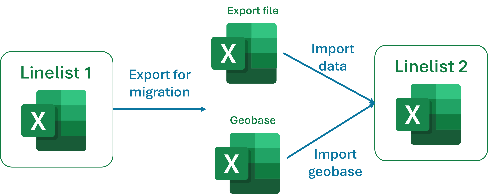
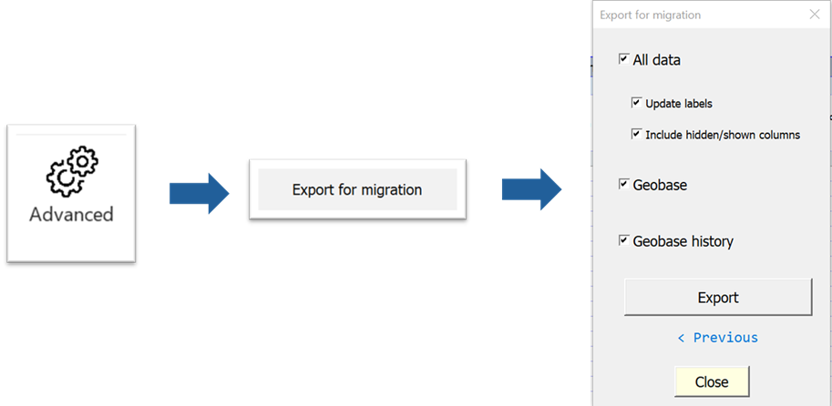

Migrate linelist data
OutbreakTools linelist have handy functionalities to import and export data. Whith them you can:
- upgrade to a newer version of a given linelist file
- move data to a the same version of a linelist, but in an uncorrupted file
- assemble data from several sites using the same linelist
If no breaking changes were introduced (see Important 1), migrating data from one linelist to the other is straightforward:
- you export patient data, the geobase, the geobase history and as many metadata as possible
- you reimport these into a new file, which may or may not be empty

If the new file is empty, the data is simply copied into the file. Is the new file already contains data, the new data is pasted under the existing data (variable by variable).
The migration is based on exporting data, and re-importing it by matching the variable names. Consequently:
- if a variable name was changed, the data from the original linelist will not be imported in the new linelist (the label can change though, if needed to clarify something)
- if the categories in a categorical variable were changed, the data will not be modified, you will have to do the matching manually in the linelist or in the export file before importing
- the script blindly copies and paste columns based on variable names, so there is not duplication detections: if you import twice the same data in a linelist, you will have to clean you duplicated rows manually.
If you modify variable names or categories within variables, that would be a breaking change, that needs special handling (i.e. you modifying the column name and the categories manually in the export file before importing).
Changing the order of variables is not a breaking change though, because the variables are imported one by one and matched by name, not by position.
Migrate the linelist to a newer version
New linelist versions are often generated for a given disease:
the variable dictionary for this specific linelist might get updated as a request of epidemiologists or the Epinetwork: added variables, improved labels, additional analyses…
the functionalities of the OutbreakTools itself may improve (bug fixes or addition of new functionalities1) and all linelist in use would benefit getting updated.
Here, typically, the new file is a new version of the linelist, and it is empty (it might also be an empty version of the same linelist if you suspect that your current file is corrupted and behaves weirdly).
Steps:
Clear data filters
Go to the OutbreakTools menu of this setup file and click on the button “Export for migration”.
Tick all the boxes you want (usually, “All data” + “Geobase”). This will create three files in the folder of your choice:
- A file containing the data
- A file containing the geobase and the geobase history
- Optionaly, a file containing uniquely the geobase history, which we will ignore now.
Open a new, emtpy linelist file
Go to the import section of the OutbreakTools menu. Use the “Import data” button to import the data export file, and the “Import geobase” button to import the geobase files (which contains the history, if an history existed).

Once you are used to the steps, migrating data should take you only a couple of minutes.
Here we described a case where you wanted to migrate the whole data. If you need to split the data between two linelists (maybe before and after a date, or active / inactive cohort), you can use filters on patient data to only export a subset of the rows.
Make a master linelist
It is possible to gather data from several linelists (with the same version of the dictionary). There are several use cases:
several facilities enter data in their own linelist, and the epidemiologist or medCo would like to study the analyses at the region or mission level, pooling data from all sites. It is possible to make a temporary master linelist to do that.
the caseload is high and you would like two data encoders to work on the linelist. You can split the daily work between themselves: one completes existing rows, adding the outcome status for example (main file), while the other encodes new patients (new rows). Every night they import the new patients into the main file. The next morning, the person encoding “new patients” starts with a new empty file for new lines.
Steps:
Export the data from each facility linelist using the “Export data” button from the the OutbreakTools menu. Since you only want to pool patient data, there is no need to use the “Export for migration” button as you don’t care for metadata in this context: the anonymous export is enough.
Get an empty linelist file. This will become your temporary master linelist.
Import the all the exports into the master file one by one, using the “Import data” button from the OutbreakTools menu. When a warning pop up opens, tell it that you want to add the data at the bottom of the existing data.
Refresh analyses (always!) before examining the analyses.
This master-linelist should not be used to enter more data/clean data, as these change will not be reflected on the site linelists. It should only be used for perusing the analyses at a higher scale.
Similarly, you should not send a pooled export for the dashboard, as the scripts are encoded to import the site one by one, keeping the site metadata.
Footnotes
the later often generating a couple of the former for a while↩︎